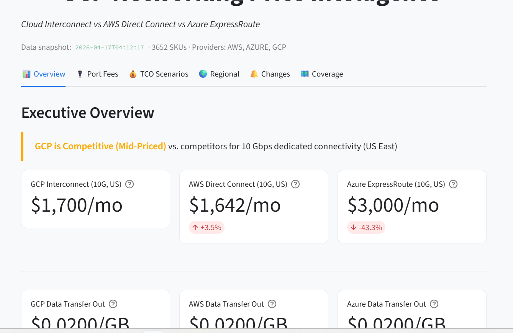
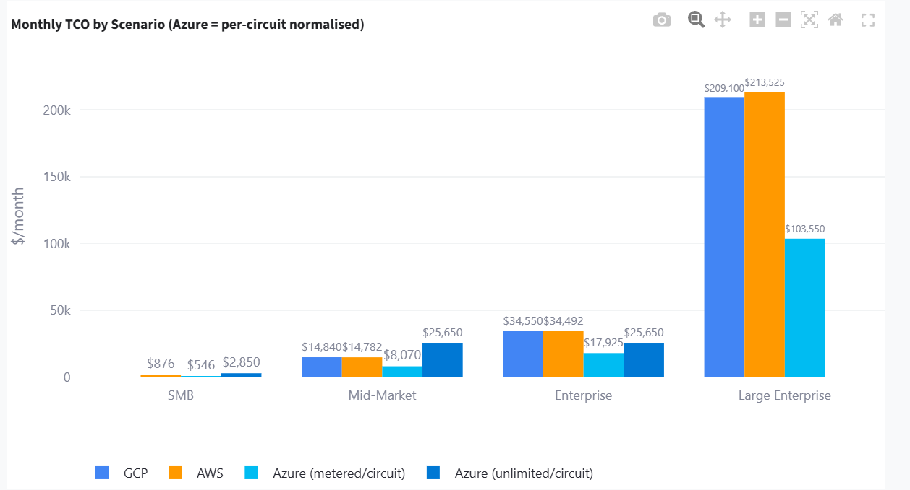

GCP Networking Price Intelligence
Real-time competitive comparison of Cloud Interconnect, Direct Connect, and ExpressRoute across GCP, AWS, and Azure — normalised, live, and exec-ready.
"In meetings I kept running into the same question: how does GCP Interconnect actually compare to AWS or Azure once you account for bundling differences and regional pricing? Nobody had a clean, live answer. So I built one."


Deep dive ›
The Problem
Cloud interconnect pricing is notoriously opaque. AWS, Azure, and GCP each publish pricing differently — different units, bundling assumptions, and regional structures — making apples-to-apples comparison almost impossible without significant manual work. No public tool normalised this for enterprise hybrid connectivity decisions.
What I Built & Decided
- Executive KPI overview — one-line verdict on GCP's competitive position per region/speed combination
- TCO modelling — parameterised by utilisation rate and customer segment (SMB → Large Enterprise)
- Price change tracking — alerting when any provider updates a SKU, with historical diffs
- Live data — pulls directly from GCP Billing API, AWS Price List API, and Azure Retail Prices API; no stale CSVs
- Normalisation logic — Azure bundles 2 circuits; I normalised to per-circuit to make comparisons fair. This was the hardest product decision: show raw price or normalised? I chose normalised with a tooltip explaining the methodology.
How AI Was Used
I used Claude to scaffold the ETL pipeline and the Streamlit layout — the parts where I knew exactly what I wanted but didn't want to spend a weekend on setup. The real work was deciding what to normalise. Azure bundles two circuits per port; if you show the raw price, it looks artificially cheaper. If you normalise it, you have to explain your methodology clearly enough that people trust it. I went with normalised pricing and added a tooltip. Most people skip the tooltip. A few don't — and those are usually the people who'd catch it in a meeting.
Tech Stack
What I Learned
- The "GCP is Competitive (Mid-Priced)" verdict line at the top of the overview took longer to get right than any of the charts. It's one sentence, but it's the one thing people actually remember from a dashboard. Everything else is supporting evidence.
- Live data beats a well-maintained spreadsheet — but only if you've thought carefully about what "live" means per provider. Each API has different staleness characteristics. That took some time to get right.